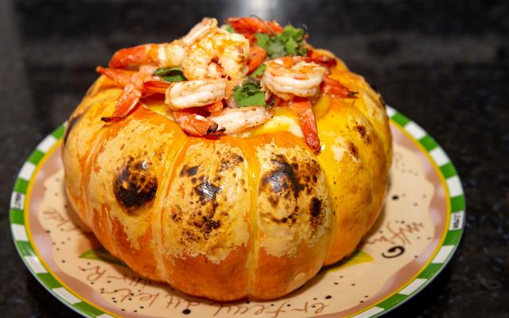

Camarão na Moranga
Ingredientes
- 1 kg de camarão médio
- 2 dentes de alho
- 5 tomates sem sementes
- 3 colheres (sopa) de ketchup
- 1 lata de creme de leite sem soro
- 1 moranga
- 4 colheres (sopa) de azeite
- 1 cebola
- sal a gosto
- pimenta-do-reino a gosto
- 300 g de requeijão cremoso
- cheiro-verde a gosto
Utensílios
- Concha
- Faca
- Tábua de Corte
- Espátula
- Frigideira Funda
Modo de Preparo
- Retire a tampa e as sementes da moranga.
- Lave e enrole-a em papel alumínio e leve ao forno médio (180° C) por 45 minutos.
- Em uma panela, aqueça o azeite e refogue o alho e a cebola, junte o camarão e deixe cozinhar por 5 minutos.
- Adicione os tomates picados, a pimenta, o sal e o ketchup.
- Desligue o fogo e acrescente o creme de leite e o cheiro-verde.
- Misture bem e adicione por último o requeijão.
- Passe um pouco de requeijão no interior da moranga e despeje o creme de camarão.